Contents
- Instability of the wake of a cylinder with STABFEM
- CHAPTER 0 : set the global variables needed by the drivers
- ##### CHAPTER 1 : COMPUTING THE MESH WITH ADAPTMESH PROCEDURE
- CHAPTER 1b : DRAW FIGURES
- CHAPTER 2 : DESCRIPTION OF BASE FLOW PROPERTIES (range 2-50)
- CHAPTER 3 : COMPUTING STABILITY BRANCH
- CHAPTER 3b : figures
- CHAPTER 4 : computation of weakly nonlinear expansion
- CHAPTER 5 : SELF CONSISTENT / HB1
- THE STARTING POINT HAS BEEN GENERATED ABOVE, WHEN PERFORMING THE WNL
- ANALYSIS
- chapter 5b : figures
Instability of the wake of a cylinder with STABFEM
this scripts performs the following calculations :
- Generation of an adapted mesh
- Base-flow properties for Re = [2-40]
- Stability curves St(Re) and sigma(Re) for Re = [40-100]
- Determination of the instability threshold and Weakly-Nonlinear analysis
- Harmonic-Balance for Re = [REc-100]
- Self-consistent model for Re = 100
CHAPTER 0 : set the global variables needed by the drivers
clear all; close all; run('../../SOURCES_MATLAB/SF_Start.m');verbosity=0; figureformat='png'; AspectRatio = 0.56; % for figures system('mkdir FIGURES'); set(groot, 'defaultAxesTickLabelInterpreter','latex'); set(groot, 'defaultLegendInterpreter','latex'); tic;
mkdir: FIGURES: File exists
##### CHAPTER 1 : COMPUTING THE MESH WITH ADAPTMESH PROCEDURE
disp(' STARTING ADAPTMESH PROCEDURE : '); disp(' '); disp(' LARGE MESH : [-40:80]x[0:40] '); disp(' '); bf=SF_Init('Mesh_Cylinder.edp',[-40 80 40]); bf=SF_BaseFlow(bf,'Re',1); bf=SF_Adapt(bf,'Hmax',2); bf=SF_BaseFlow(bf,'Re',10); bf=SF_BaseFlow(bf,'Re',60); bf=SF_Adapt(bf,'Hmax',2); meshstrategynonlinear = 'D'; % select 'D' or 'S' % 'D' will use mesh adapted on direct eigenmode (mesh M_4): % this is necessary to compute correctly the structure of the mode (fig. 5a) % and the energy-amplitude (fig. 7d) % 'S' will use mesh adapted on sensitivity (mesh M_2): % figs. (5a) and (7d) will be wrong, on the other all other results % will be correct and nonlinear computations will be much much faster. if(meshstrategynonlinear=='D') bf=SF_BaseFlow(bf,'Re',60); disp('using mesh adaptated to EIGENMODE (M4) ') [ev,emS,em,emA,emE] = SF_Stability(bf,'shift',0.04+0.76i,'nev',1,'type','S'); bf=SF_Adapt(bf,em,emE,'Hmax',2); [ev,em] = SF_Stability(bf,'shift',0.04+0.76i,'nev',1,'type','D'); else disp('mesh adaptation to SENSITIVITY : ') % This is mesh M2 from the appendix [ev,emS,em,emA,emE] = SF_Stability(bf,'shift',0.04+0.76i,'nev',1,'type','S'); bf = SF_Adapt(bf,emS,'Hmax',2); end [ev,emS,em,emA,emE] = SF_Stability(bf,'shift',0.04+0.76i,'nev',1,'type','S'); % compute on last mesh
STARTING ADAPTMESH PROCEDURE :
LARGE MESH : [-40:80]x[0:40]
rm: ./WORK/BASEFLOWS/*: No such file or directory
rm: ./WORK/MEANFLOWS/*: No such file or directory
ans =
0
rm: ./WORK/Eigenmode*: No such file or directory
rm: ./WORK/Eigenmode*: No such file or directory
using mesh adaptated to EIGENMODE (M4)
# Stability calculation completed, eigenvalue = 0.046839+0.74518i ; converged in 15 iterations
CHAPTER 1b : DRAW FIGURES
plot the mesh (full size)
figure();SF_Plot(bf,'mesh','xlim',[-40 80],'ylim',[0 40]); title('Initial mesh (full size)'); box on; pos = get(gcf,'Position'); pos(4)=pos(3)*AspectRatio;set(gcf,'Position',pos); % resize aspect ratio set(gca,'FontSize', 18); saveas(gca,'FIGURES/Cylinder_Mesh_Full',figureformat); % plot the mesh (zoom) figure();SF_Plot(bf,'mesh','xlim',[-1.5 4.5],'ylim',[0 3]); box on; pos = get(gcf,'Position'); pos(4)=pos(3)*AspectRatio;set(gcf,'Position',pos); % resize aspect ratio set(gca,'FontSize', 18); saveas(gca,'FIGURES/Cylinder_Mesh',figureformat);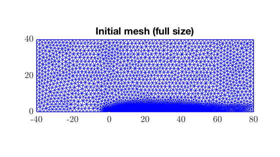 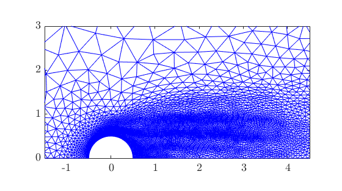
plot the base flow for Re = 60
figure(); %SF_Plot(bf,'ux','xlim',[-1.5 4.5],'ylim',[-2 2],'colorbar','northoutside','cbtitle','u_x','colormap','redblue',... % 'contour','psi','clevels',[-.02 0 .2 1 2 5]); %hold on; %SF_Plot(bf,'p','xlim',[-1.5 4.5],'ylim',[-2 2],'colorbar','southoutside','cbtitle','p','colormap','jet',... % 'contour','psi','clevels',[-.02 0 .2 1 2 5],'symmetry','XM'); %SF_Plot(bf,'psi','xlim',[-1.5 4.5],'ylim',[-3 3],'contours','on','xystyle','off','symmetry','XA'); SF_Plot(bf,'p','xlim',[-1.5 4.5],'ylim',[0 3],'cbtitle','p','colormap','redblue','colorrange','centered',... 'contour','psi','clevels',[-.02 0 .2 1 2 5],'boundary','on','bdlabels',2); box on; pos = get(gcf,'Position'); pos(4)=pos(3)*AspectRatio;set(gcf,'Position',pos); % resize aspect ratio set(gca,'FontSize', 18); saveas(gca,'FIGURES/Cylinder_BaseFlowRe60',figureformat); % plot the eigenmode for Re = 60 figure();SF_Plot(em,'ux1','xlim',[-2 8],'ylim',[0 5],'colormap','redblue','colorrange','cropcentered','boundary','on','bdlabels',2); box on; pos = get(gcf,'Position'); pos(4)=pos(3)*AspectRatio;set(gcf,'Position',pos); % resize aspect ratio set(gca,'FontSize', 18); saveas(gca,'FIGURES/Cylinder_EigenModeRe60_AdaptS',figureformat); % figure();SF_Plot(emA,'ux1Adj','xlim',[-2 8],'ylim',[0 5],'colormap','redblue','colorrange','cropcentered','boundary','on','bdlabels',2); box on; pos = get(gcf,'Position'); pos(4)=pos(3)*AspectRatio;set(gcf,'Position',pos); % resize aspect ratio set(gca,'FontSize', 18); saveas(gca,'FIGURES/Cylinder_EigenModeAdjRe60',figureformat); figure();SF_Plot(emS,'sensitivity','xlim',[-2 4],'ylim',[0 3],'colormap','ice','boundary','on','bdlabels',2); box on; pos = get(gcf,'Position'); pos(4)=pos(3)*AspectRatio;set(gcf,'Position',pos); % resize aspect ratio set(gca,'FontSize', 18); saveas(gca,'FIGURES/Cylinder_SensitivityRe60',figureformat); figure();SF_Plot(emE,'endogeneity.re','contour','endogeneity.im','xlim',[-2 4],'ylim',[0 3],'colormap','redblue','boundary','on','bdlabels',2); %hold on; SF_Plot(emE,'endogeneity.im','xlim',[-2 6],'ylim',[-3 3],'symmetry','XM','colormap','redblue'); box on; pos = get(gcf,'Position'); pos(4)=pos(3)*AspectRatio;set(gcf,'Position',pos); % resize aspect ratio set(gca,'FontSize', 18); saveas(gca,'FIGURES/Cylinder_EndogeneityRe60',figureformat); pause(0.1);
Note: To improve runtime build MEX function ffplottri2grid() from ffplottri2grid.c Note: To improve runtime build MEX function ffplottri2grid() from ffplottri2grid.c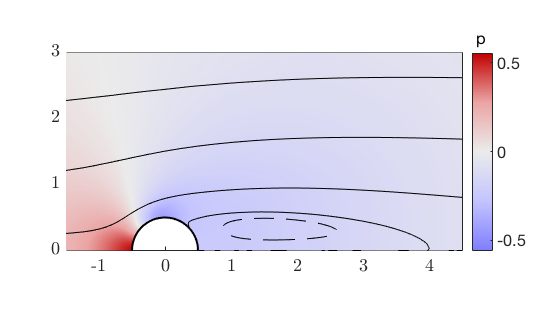 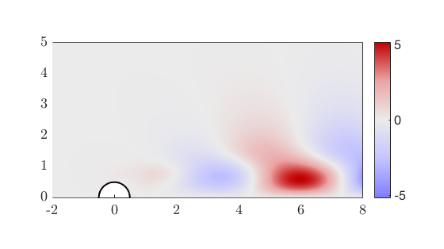 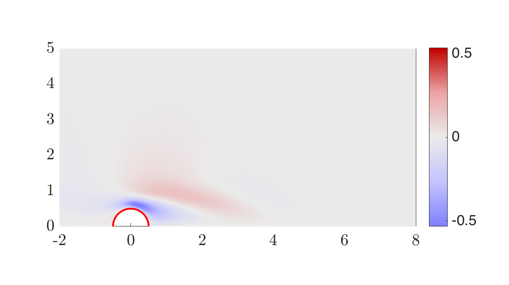 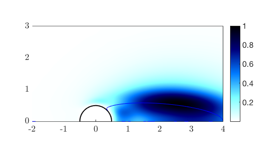 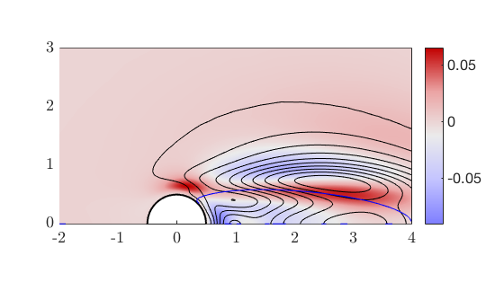
CHAPTER 2 : DESCRIPTION OF BASE FLOW PROPERTIES (range 2-50)
Re_BF = [2 : 2: 50];
Fx_BF = []; Lx_BF = [];
for Re = Re_BF
bf = SF_BaseFlow(bf,'Re',Re);
Fx_BF = [Fx_BF,bf.Fx];
Lx_BF = [Lx_BF,bf.Lx];
end
% chapter 2B : figures
figure(22);hold off;
plot(Re_BF,Fx_BF,'b+-','LineWidth',2);
xlabel('Re');ylabel('Fx');
box on; pos = get(gcf,'Position'); pos(4)=pos(3)*AspectRatio;set(gcf,'Position',pos); % resize aspect ratio
set(gca,'FontSize', 18);
saveas(gca,'FIGURES/Cylinder_Fx_baseflow',figureformat);
figure(23);hold off;
plot(Re_BF,Lx_BF,'b+-','LineWidth',2);
xlabel('Re');ylabel('Lx');
box on; pos = get(gcf,'Position'); pos(4)=pos(3)*AspectRatio;set(gcf,'Position',pos); % resize aspect ratio
set(gca,'FontSize', 18);
saveas(gca,'FIGURES/Cylinder_Lx_baseflow',figureformat);
pause(0.1);
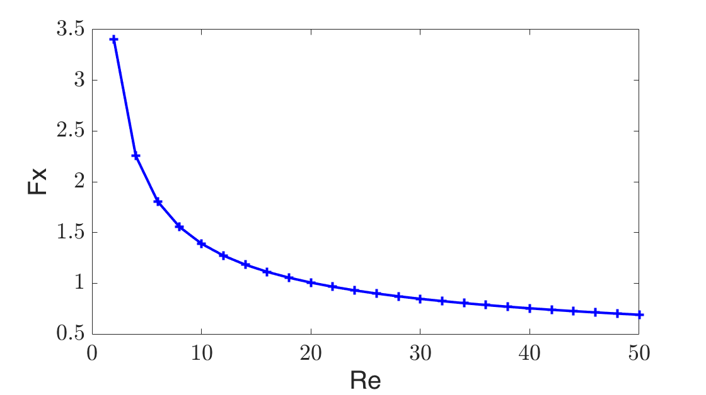 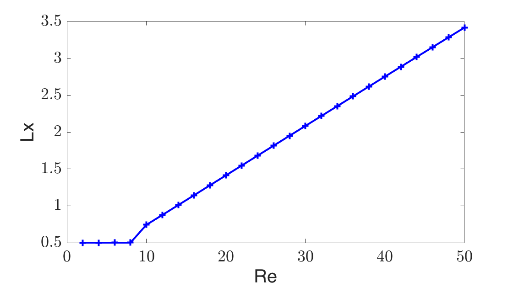 CHAPTER 3 : COMPUTING STABILITY BRANCH
disp('COMPUTING STABILITY BRANCH') % LOOP OVER RE FOR BASEFLOW + EIGENMODE Re_LIN = [40 : 2: 100]; bf=SF_BaseFlow(bf,'Re',40); [ev,em] = SF_Stability(bf,'shift',-.03+.72i,'nev',1,'type','D'); Fx_LIN = []; Lx_LIN = [];lambda_LIN=[]; for Re = Re_LIN bf = SF_BaseFlow(bf,'Re',Re); Fx_LIN = [Fx_LIN,bf.Fx]; Lx_LIN = [Lx_LIN,bf.Lx]; [ev,em] = SF_Stability(bf,'nev',1,'shift','cont'); lambda_LIN = [lambda_LIN ev]; end completed_lambda = 1;
COMPUTING STABILITY BRANCH
# Stability calculation completed, eigenvalue = -0.030783+0.72037i ; converged in 5 iterations
# Stability calculation completed, eigenvalue = -0.030783+0.72037i ; converged in 3 iterations
# Stability calculation completed, eigenvalue = -0.020968+0.72484i ; converged in 13 iterations
# Stability calculation completed, eigenvalue = -0.011699+0.72874i ; converged in 5 iterations
# Stability calculation completed, eigenvalue = -0.0029368+0.73214i ; converged in 5 iterations
# Stability calculation completed, eigenvalue = 0.0053536+0.73508i ; converged in 5 iterations
# Stability calculation completed, eigenvalue = 0.013206+0.73761i ; converged in 5 iterations
# Stability calculation completed, eigenvalue = 0.020649+0.73977i ; converged in 5 iterations
# Stability calculation completed, eigenvalue = 0.027711+0.74157i ; converged in 5 iterations
# Stability calculation completed, eigenvalue = 0.034415+0.74306i ; converged in 4 iterations
# Stability calculation completed, eigenvalue = 0.040785+0.74426i ; converged in 4 iterations
# Stability calculation completed, eigenvalue = 0.046839+0.74518i ; converged in 4 iterations
# Stability calculation completed, eigenvalue = 0.052598+0.74585i ; converged in 4 iterations
# Stability calculation completed, eigenvalue = 0.058077+0.74628i ; converged in 4 iterations
# Stability calculation completed, eigenvalue = 0.063293+0.74648i ; converged in 4 iterations
# Stability calculation completed, eigenvalue = 0.068259+0.74648i ; converged in 4 iterations
# Stability calculation completed, eigenvalue = 0.07299+0.74628i ; converged in 4 iterations
# Stability calculation completed, eigenvalue = 0.077498+0.74589i ; converged in 4 iterations
# Stability calculation completed, eigenvalue = 0.081794+0.74534i ; converged in 4 iterations
# Stability calculation completed, eigenvalue = 0.085889+0.74461i ; converged in 4 iterations
# Stability calculation completed, eigenvalue = 0.089794+0.74374i ; converged in 4 iterations
# Stability calculation completed, eigenvalue = 0.093519+0.74271i ; converged in 4 iterations
# Stability calculation completed, eigenvalue = 0.097072+0.74155i ; converged in 4 iterations
# Stability calculation completed, eigenvalue = 0.10046+0.74026i ; converged in 4 iterations
# Stability calculation completed, eigenvalue = 0.1037+0.73884i ; converged in 4 iterations
# Stability calculation completed, eigenvalue = 0.10679+0.7373i ; converged in 4 iterations
# Stability calculation completed, eigenvalue = 0.10974+0.73565i ; converged in 4 iterations
# Stability calculation completed, eigenvalue = 0.11256+0.7339i ; converged in 4 iterations
# Stability calculation completed, eigenvalue = 0.11525+0.73205i ; converged in 4 iterations
# Stability calculation completed, eigenvalue = 0.11783+0.7301i ; converged in 4 iterations
# Stability calculation completed, eigenvalue = 0.12029+0.72807i ; converged in 4 iterations
# Stability calculation completed, eigenvalue = 0.12265+0.72595i ; converged in 4 iterations
CHAPTER 3b : figures
figure(20); plot(Re_LIN,real(lambda_LIN),'b+-'); xlabel('Re');ylabel('$\sigma$','Interpreter','latex'); box on; pos = get(gcf,'Position'); pos(4)=pos(3)*AspectRatio;set(gcf,'Position',pos); % resize aspect ratio set(gca,'FontSize', 18); saveas(gca,'FIGURES/Cylinder_Sigma_Re',figureformat); figure(21);hold off; plot(Re_LIN,imag(lambda_LIN)/(2*pi),'b+-'); xlabel('Re');ylabel('St'); box on; pos = get(gcf,'Position'); pos(4)=pos(3)*AspectRatio;set(gcf,'Position',pos); % resize aspect ratio set(gca,'FontSize', 18); saveas(gca,'FIGURES/Cylinder_Strouhal_Re',figureformat); pause(0.1); disp(' '); disp(' cpu time for Linear calculations : '); tlin = toc; disp([ ' ' num2str(tlin) ' seconds']); tic;
cpu time for Linear calculations :
1091.1413 seconds
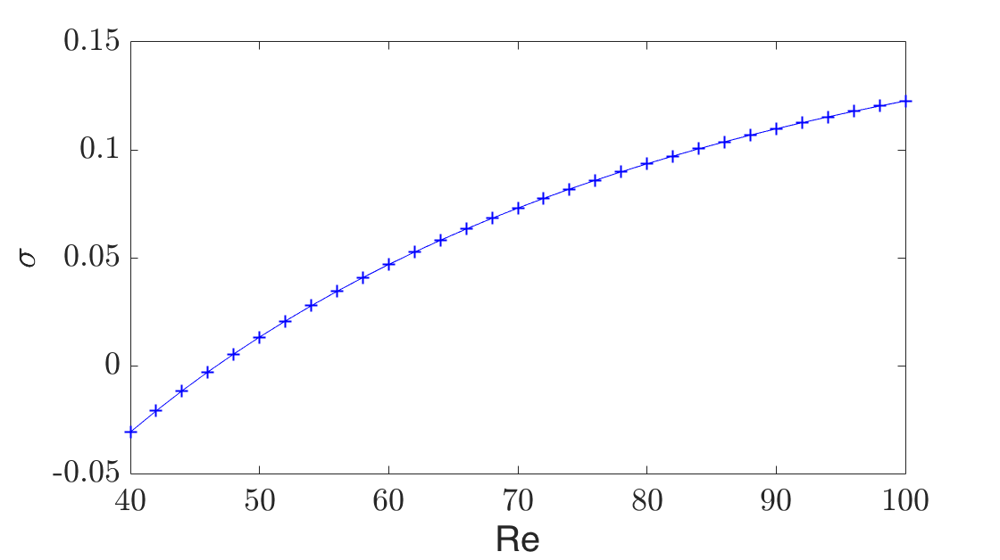 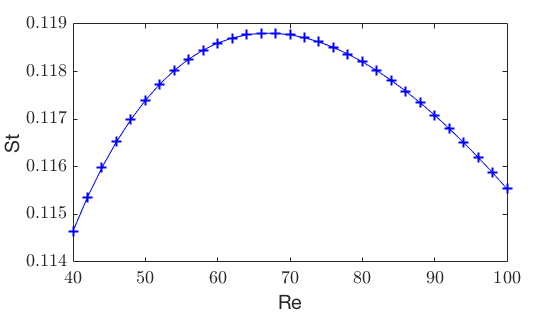 CHAPTER 4 : computation of weakly nonlinear expansion
disp(' '); disp('###### ENTERING NONLINEAR PART ####### '); disp(' '); % plot the eigenmode for Re = 60 em.xlim = [-2 8]; em.ylim=[0,5]; figure();SF_Plot(em,'ux1','colorrange',[-.5 .5],'xlim',[-2 8],'ylim',[0 5]); %title('Eigenmode for Re=60'); box on; pos = get(gcf,'Position'); pos(4)=pos(3)*AspectRatio;set(gcf,'Position',pos); % resize aspect ratio set(gca,'FontSize', 18); saveas(gca,'FIGURES/Cylinder_EigenModeRe60_AdaptD',figureformat); % % DETERMINATION OF THE INSTABILITY THRESHOLD disp('COMPUTING INSTABILITY THRESHOLD'); bf=SF_BaseFlow(bf,'Re',50); [ev,em] = SF_Stability(bf,'shift',+.75i,'nev',1,'type','D'); [bf,em]=SF_FindThreshold(bf,em); Rec = bf.Re; Fxc = bf.Fx; Lxc=bf.Lx; Omegac=imag(em.lambda); [ev,em] = SF_Stability(bf,'shift',1i*Omegac,'nev',1,'type','S'); % type "S" because we require both direct and adjoint [wnl,meanflow,mode] = SF_WNL(bf,em,'Retest',47.); % Here to generate a starting point for the next chapter
###### ENTERING NONLINEAR PART #######
COMPUTING INSTABILITY THRESHOLD
# Stability calculation completed, eigenvalue = 0.013206+0.73761i ; converged in 17 iterations
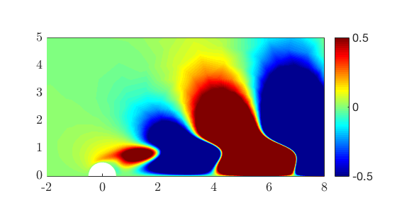 PLOTS of WNL predictions
epsilon2_WNL = -0.003:.0001:.005; % will trace results for Re = 40-55 approx. Re_WNL = 1./(1/Rec-epsilon2_WNL); A_WNL = wnl.Aeps*real(sqrt(epsilon2_WNL)); Fy_WNL = wnl.Fyeps*real(sqrt(epsilon2_WNL))*2; % factor 2 because of complex conjugate omega_WNL =Omegac + epsilon2_WNL*imag(wnl.Lambda) ... - epsilon2_WNL.*(epsilon2_WNL>0)*real(wnl.Lambda)*imag(wnl.nu0+wnl.nu2)/real(wnl.nu0+wnl.nu2) ; Fx_WNL = wnl.Fx0 + wnl.Fxeps2*epsilon2_WNL ... + wnl.FxA20*real(wnl.Lambda)/real(wnl.nu0+wnl.nu2)*epsilon2_WNL.*(epsilon2_WNL>0) ; figure(20);hold on; plot(Re_WNL,real(wnl.Lambda)*epsilon2_WNL,'g--','LineWidth',2);hold on; figure(21);hold on; plot(Re_WNL,omega_WNL/(2*pi),'g--','LineWidth',2);hold on; xlabel('Re');ylabel('St'); figure(22);hold on; plot(Re_WNL,Fx_WNL,'g--','LineWidth',2);hold on; xlabel('Re');ylabel('Fx'); figure(24); hold on; plot(Re_WNL,abs(Fy_WNL),'g--','LineWidth',2); xlabel('Re');ylabel('Fy') figure(25);hold on; plot(Re_WNL,A_WNL,'g--','LineWidth',2); xlabel('Re');ylabel('AE') pause(0.1);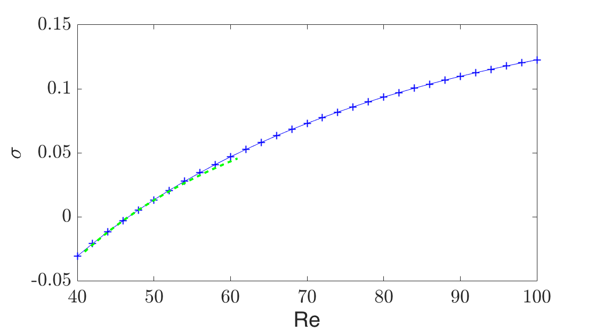 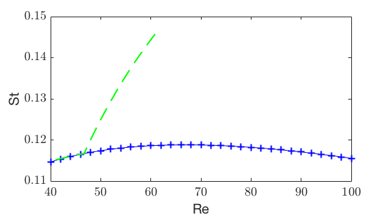 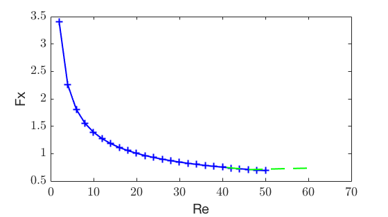 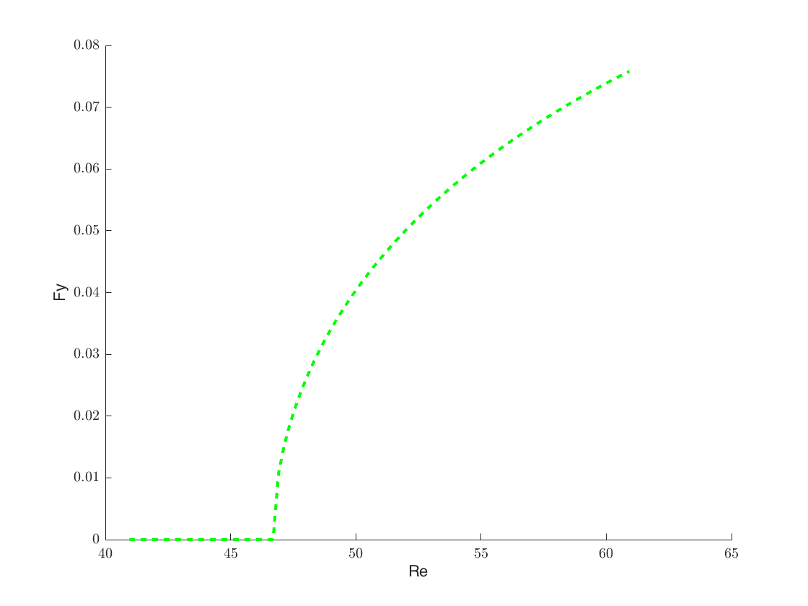 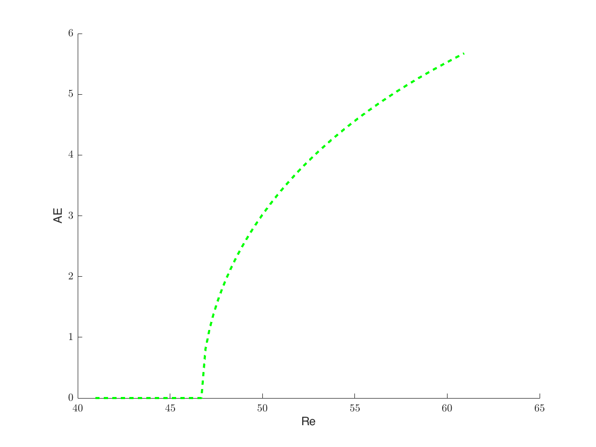
CHAPTER 5 : SELF CONSISTENT / HB1
disp('SC quasilinear model on the range [Rec , 100]');
Re_HB = [Rec 47 47.5 48 49 50 52.5 55 60 65 70 75 80 85 90 95 100];
THE STARTING POINT HAS BEEN GENERATED ABOVE, WHEN PERFORMING THE WNL
ANALYSIS
Res = 47. ; Lx_HB = [Lxc]; Fx_HB = [Fxc]; omega_HB = [Omegac]; Aenergy_HB = [0]; Fy_HB = [0]; [meanflow,mode] = SF_HB1(meanflow,mode,'sigma',0.,'Re',Res); for Re = Re_HB(2:end) [meanflow,mode] = SF_HB1(meanflow,mode,'Re',Re); Lx_HB = [Lx_HB meanflow.Lx]; Fx_HB = [Fx_HB meanflow.Fx]; omega_HB = [omega_HB imag(mode.lambda)]; Aenergy_HB = [Aenergy_HB mode.AEnergy]; Fy_HB = [Fy_HB mode.Fy]; if(Re==60) meanflow.xlim = [-2 4]; meanflow.ylim=[0,3]; figure();SF_Plot(meanflow,'ux','contour','on','clevels',[0 0],'xlim',[-2 4],'ylim',[0 3]); box on; pos = get(gcf,'Position'); pos(4)=pos(3)*AspectRatio;set(gcf,'Position',pos); % resize aspect ratio set(gca,'FontSize', 18); saveas(gca,'FIGURES/Cylinder_MeanFlowRe60',figureformat); end end save('Cylinder_AllFigures.mat');
SC quasilinear model on the range [Rec , 100] Note: To improve runtime build MEX function ffplottri2grid() from ffplottri2grid.c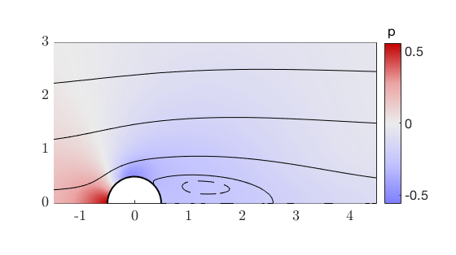
chapter 5b : figures
%load('Cylinder_AllFigures.mat'); figure(21);hold off; plot(Re_LIN,imag(lambda_LIN)/(2*pi),'b+-'); hold on; plot(Re_WNL,omega_WNL/(2*pi),'g--','LineWidth',2);hold on; plot(Re_HB,omega_HB/(2*pi),'r+-','LineWidth',2); plot(Rec,Omegac/2/pi,'ro'); xlabel('Re');ylabel('St'); box on; pos = get(gcf,'Position'); pos(4)=pos(3)*AspectRatio;set(gcf,'Position',pos); % resize aspect ratio set(gca,'FontSize', 18); legend('Linear','WNL','SC','Location','northwest'); saveas(gca,'FIGURES/Cylinder_Strouhal_Re_HB',figureformat); figure(22);hold off; plot(Re_LIN,Fx_LIN,'b+-'); hold on; plot(Re_WNL,Fx_WNL,'g--','LineWidth',2);hold on; plot(Re_HB,Fx_HB,'r+-','LineWidth',2); plot(Rec,Fxc,'ro') xlabel('Re');ylabel('Fx'); box on; pos = get(gcf,'Position'); pos(4)=pos(3)*AspectRatio;set(gcf,'Position',pos); % resize aspect ratio set(gca,'FontSize', 18); legend('BF','WNL','SC','Location','south'); saveas(gca,'FIGURES/Cylinder_Cx_Re_HB',figureformat); figure(23);hold off; plot(Re_LIN,Lx_LIN,'b+-'); hold on; plot(Re_HB,Lx_HB,'r+-','LineWidth',2); plot(Rec,Lxc,'ro','LineWidth',2); xlabel('Re');ylabel('Lx'); box on; pos = get(gcf,'Position'); pos(4)=pos(3)*AspectRatio;set(gcf,'Position',pos); % resize aspect ratio set(gca,'FontSize', 18); legend('BF','SC','Location','northwest'); saveas(gca,'FIGURES/Cylinder_Lx_Re_HB',figureformat); figure(24);hold off; plot(Re_WNL,abs(Fy_WNL),'g--','LineWidth',2); hold on; plot(Re_HB,real(Fy_HB),'r+-','LineWidth',2); %title('Harmonic Balance results'); xlabel('Re'); ylabel('Fy') box on; pos = get(gcf,'Position'); pos(4)=pos(3)*AspectRatio; set(gcf,'Position',pos); % resize aspect ratio set(gca,'FontSize', 18); legend('WNL','SC','Location','south'); saveas(gca,'FIGURES/Cylinder_Cy_Re_SC',figureformat); figure(25);hold off; plot(Re_WNL,A_WNL,'g--','LineWidth',2); hold on; plot(Re_HB,Aenergy_HB,'r+-','LineWidth',2); %title('Harmonic Balance results'); xlabel('Re');ylabel('A_E') box on; pos = get(gcf,'Position'); pos(4)=pos(3)*AspectRatio; set(gcf,'Position',pos); % resize aspect ratio set(gca,'FontSize', 18); legend('WNL','SC','Location','south'); if(meshstrategynonlinear=='D') filename = 'FIGURES/Cylinder_Energy_Re_SC_AdaptD'; else filename = 'FIGURES/Cylinder_Energy_Re_SC_AdaptS'; end saveas(gca,filename,figureformat); tnolin = toc; disp(' '); disp(' cpu time for Nonlinear calculations : '); disp([ ' ' num2str(tnolin) ' seconds']); disp(' '); disp('Total cpu time for the linear & nonlinear calculations and generation of all figures : '); disp([ ' ' num2str(tlin+tnolin) ' seconds']); save('Results_Cylinder.mat');
cpu time for Nonlinear calculations :
3735.8861 seconds
Total cpu time for the linear & nonlinear calculations and generation of all figures :
4827.0274 seconds
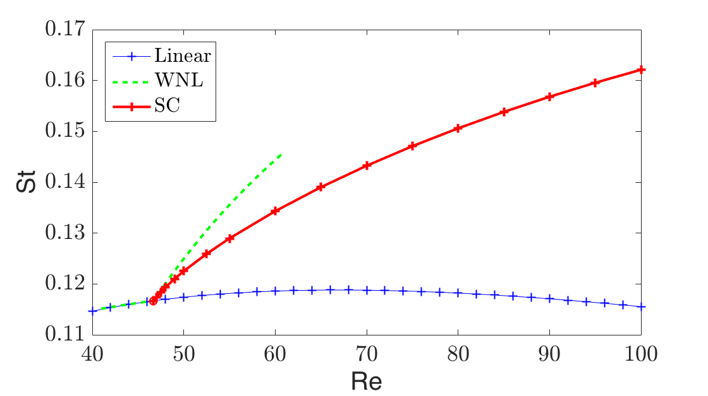 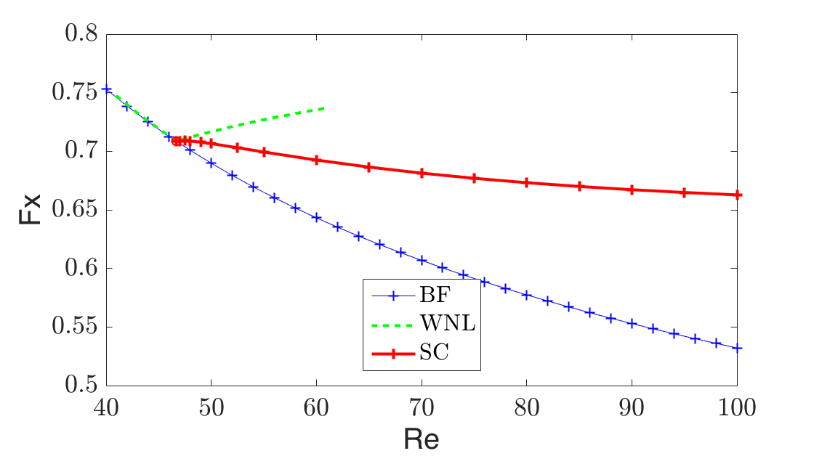 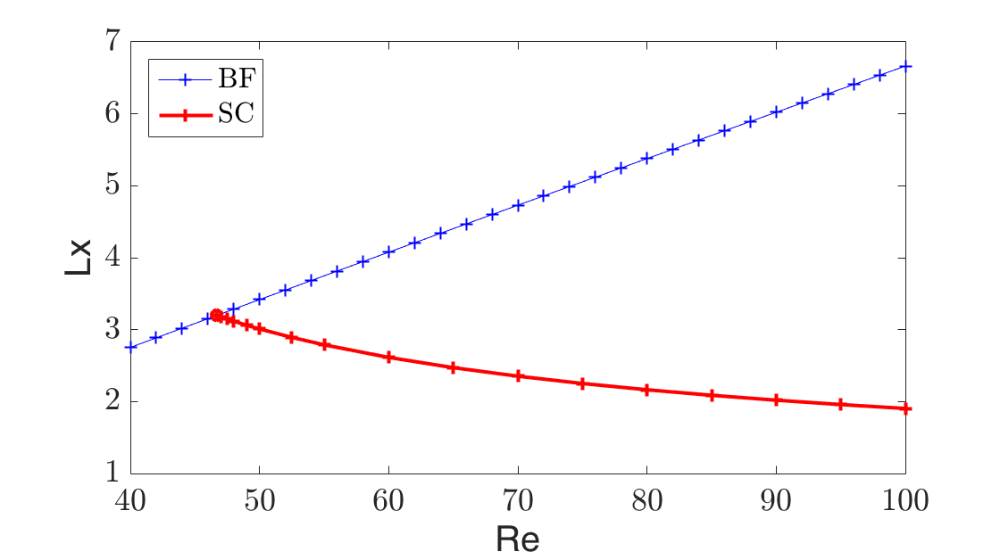 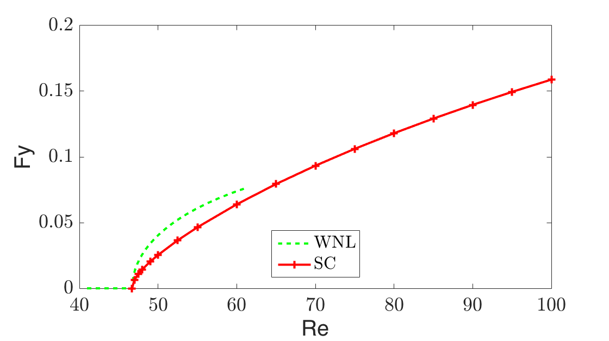 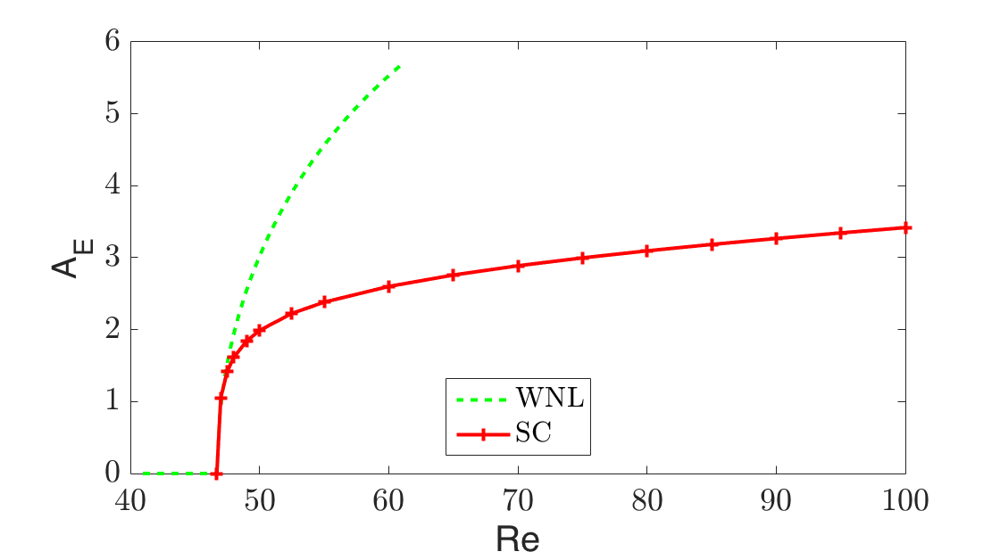